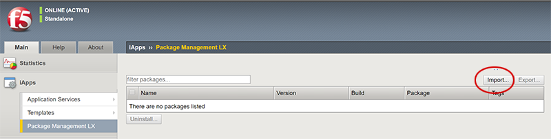
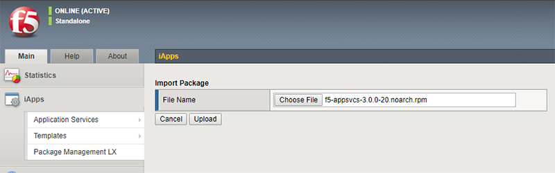
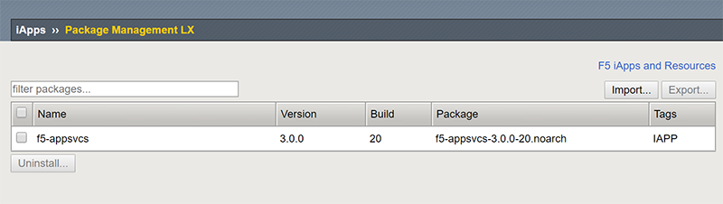
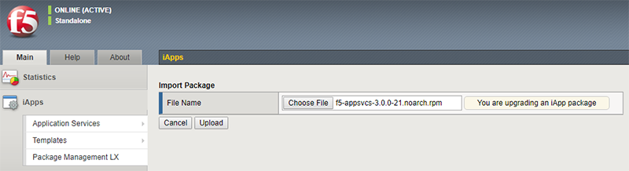

Downloading and installing the BIG-IP AS3 package
The BIG-IP AS3 package is an RPM file you download, and then upload to the BIG-IP system using the iControl/iApp LX framework. Alternatively, you can see our Quick Start.
Important
Starting from BIG-IP AS3 version 3.50.0, BIG-IP AS3 no longer supports BIG-IP 13.1 to 14.1.x. However, if you are still using the BIG-IP 13.1 to 14.1.x versions, you can use BIG-IP AS3 3.49.0 or earlier.
Note
You must use the admin user (and not just a user with administrator privileges) to install BIG-IP AS3.
To uninstall BIG-IP AS3, see Uninstalling BIG-IP AS3.
Downloading the RPM file
The first task is to download the latest RPM file. Go to the F5 BIG-IP AS3 repository on GitHub, and download the latest (highest numbered) RPM file, or the appropriate LTS version.
Important
Beginning with BIG-IP AS3 3.15.0, the BIG-IP AS3 RPM, Postman collection, and checksum files will no longer be located in the /dist directory in the BIG-IP AS3 repository on GitHub. These files can be found on the GitHub Release, as Assets.
Verifying the integrity of the BIG-IP AS3 RPM package
F5 Networks provides a checksum for each of our BIG-IP AS3 releases so you can confirm the integrity of the RPM package.
You can get a checksum for a particular template by running one of the following commands, depending on your operating system:
Linux: sha256sum <path_to_template>
Windows using CertUtil: CertUtil -hashfile <path_to_template> SHA256
You can compare the checksum produced by that command against the .sha256 file on GitHub. If you are using BIG-IP AS3 3.15.0 or later, this checksum file is found as a release Asset on the GitHub Release. In previous versions, this was found in the /dist directory in the GitHub repository.
Uploading and installing the BIG-IP AS3 file on the BIG-IP
After you download the RPM, you must upload and then install it on your BIG-IP system. You can use the BIG-IP Configuration utility, cURL (you can alternatively use SCP to upload the file to /var/config/rest/downloads, but you would still have to use cURL command to install the package), or a shell script to install BIG-IP AS3. Use only one of the following procedures.
Important
You must use the admin user (and not just a user with administrator privileges) to install BIG-IP AS3.
Note
For high availability clusters F5 recommends following the steps below on the active device, saving the running config on the active device with the command “tmsh save sys config”, and then synchronizing the config to the cluster peers. All BIG-IP AS3 actions should be done on the active device.
Installing BIG-IP AS3 using the BIG-IP Configuration utility
From the Configuration utility:
If you are using a BIG-IP version prior to 14.0, before you can use the Configuration utility, you must enable the framework using the BIG-IP command line. From the CLI, type the following command:
touch /var/config/rest/iapps/enable. You only need to run this command once (per BIG-IP system). This is not necessary with 14.0 and later.Click iApps > Package Management LX. Your BIG-IP AS3 version number may be different than the one shown in the following example.
Note you may have to refresh the browser page before you see Package Management LX option.
Click the Import button.

Click Choose File and then browse to the location you saved the RPM file, and then click Ok.
Click the Upload button.

Continue with Checking for a successful installation.
Installing BIG-IP AS3 using cURL from the Linux shell
If you want to use cURL to install BIG-IP AS3, use the following command syntax. First, set the file name and the BIG-IP IP address and credentials, making sure you use the appropriate RPM file name, including build number (36 in the following example), and BIG-IP credentials.
FN=f5-appsvcs-3.0.0-36.noarch.rpm
CREDS=admin:password
IP=IP address of BIG-IP
Copy the following commands to upload the package. If you uploaded the RPM by another method, you can skip these commands.
LEN=$(wc -c $FN | awk 'NR==1{print $1}')
curl -kvu $CREDS https://$IP/mgmt/shared/file-transfer/uploads/$FN -H 'Content-Type: application/octet-stream' -H "Content-Range: 0-$((LEN - 1))/$LEN" -H "Content-Length: $LEN" -H 'Connection: keep-alive' --data-binary @$FN
Copy the following commands to install the package.
DATA="{\"operation\":\"INSTALL\",\"packageFilePath\":\"/var/config/rest/downloads/$FN\"}"
curl -kvu $CREDS "https://$IP/mgmt/shared/iapp/package-management-tasks" -H "Origin: https://$IP" -H 'Content-Type: application/json;charset=UTF-8' --data $DATA
Continue with Checking for a successful installation.
Installing BIG-IP AS3 using a shell script
You can also use the following shell script to upload and install the target RPM to the BIG-IP system (the script first uninstalls any existing BIG-IP AS3 RPM packages on the BIG-IP).
To use this script, you must have both cURL and jq installed.
- Copy the following script to a new file on any system with a UNIX shell installed. We name the file install-rpm.sh.
#!/bin/bash
set -e
if [ -z "$1" ]; then
echo "Target machine is required for installation."
exit 0
fi
if [ -z "$2" ]; then
echo "Credentials [username:password] for target machine are required for installation."
exit 0
fi
if [ -z "$3" ]; then
echo "File path to RPM is required for installation."
exit 0
fi
TARGET="$1"
CREDS="$2"
TARGET_RPM="$3"
RPM_NAME=$(basename $TARGET_RPM)
CURL_FLAGS="--silent --insecure --connect-timeout 10 --max-time 30 -u $CREDS"
poll_task () {
STATUS="STARTED"
while [ $STATUS != "FINISHED" ]; do
sleep 1
RESULT=$(curl ${CURL_FLAGS} "https://$TARGET/mgmt/shared/iapp/package-management-tasks/$1")
STATUS=$(echo $RESULT | jq -r .status)
if [ $STATUS = "FAILED" ]; then
echo "Failed to" $(echo $RESULT | jq -r .operation) "package:" \
$(echo $RESULT | jq -r .errorMessage)
exit 1
fi
done
}
#Get list of existing f5-appsvcs packages on target
TASK=$(curl $CURL_FLAGS -H "Content-Type: application/json" \
-X POST https://$TARGET/mgmt/shared/iapp/package-management-tasks -d "{operation: 'QUERY'}")
poll_task $(echo $TASK | jq -r .id)
AS3RPMS=$(echo $RESULT | jq -r '.queryResponse[].packageName | select(. | startswith("f5-appsvcs"))')
#Uninstall existing f5-appsvcs packages on target
for PKG in $AS3RPMS; do
echo "Uninstalling $PKG on $TARGET"
DATA="{\"operation\":\"UNINSTALL\",\"packageName\":\"$PKG\"}"
TASK=$(curl ${CURL_FLAGS} "https://$TARGET/mgmt/shared/iapp/package-management-tasks" \
--data $DATA -H "Origin: https://$TARGET" -H "Content-Type: application/json;charset=UTF-8")
poll_task $(echo $TASK | jq -r .id)
done
#Upload new f5-appsvcs RPM to target
echo "Uploading RPM to https://$TARGET/mgmt/shared/file-transfer/uploads/$RPM_NAME"
LEN=$(wc -c $TARGET_RPM | awk 'NR==1{print $1}')
RANGE_SIZE=5000000
CHUNKS=$(( $LEN / $RANGE_SIZE))
for i in $(seq 0 $CHUNKS); do
START=$(( $i * $RANGE_SIZE))
END=$(( $START + $RANGE_SIZE))
END=$(( $LEN < $END ? $LEN : $END))
OFFSET=$(( $START + 1))
curl ${CURL_FLAGS} -o /dev/null --write-out "" \
https://$TARGET/mgmt/shared/file-transfer/uploads/$RPM_NAME \
--data-binary @<(tail -c +$OFFSET $TARGET_RPM) \
-H "Content-Type: application/octet-stream" \
-H "Content-Range: $START-$(( $END - 1))/$LEN" \
-H "Content-Length: $(( $END - $START ))" \
-H "Connection: keep-alive"
done
#Install f5-appsvcs on target
echo "Installing $RPM_NAME on $TARGET"
DATA="{\"operation\":\"INSTALL\",\"packageFilePath\":\"/var/config/rest/downloads/$RPM_NAME\"}"
TASK=$(curl ${CURL_FLAGS} "https://$TARGET/mgmt/shared/iapp/package-management-tasks" \
--data $DATA -H "Origin: https://$TARGET" -H "Content-Type: application/json;charset=UTF-8")
poll_task $(echo $TASK | jq -r .id)
echo "Waiting for /info endpoint to be available"
until curl ${CURL_FLAGS} -o /dev/null --write-out "" --fail --silent \
"https://$TARGET/mgmt/shared/appsvcs/info"; do
sleep 1
done
echo "Installed $RPM_NAME on $TARGET"
exit 0
- Make the new file an executable script with the following command (use the name you gave the script if different):
chmod +x install-rpm.sh - Use the following command syntax to execute the script and pass it the IP of the target BIG-IP, BIG-IP credentials, and path to the RPM (use the name you gave the script if different):
./install-rpm.sh <IP address of BIG-IP> <username>:<password> <path to RPM>
Checking for a successful installation
After you have installed BIG-IP AS3, you can test for a successful installation by sending a GET request to the /info endpoint. For example, from your RESTful client, after entering your credentials, use GET to send https://(IP address of BIG-IP)/mgmt/shared/appsvcs/info.
You should see a response like the following:
{
"version": "3.8.0",
"release": "2",
"schemaCurrent": "3.8.0",
"schemaMinimum": "3.0.0"
}
Updating BIG-IP AS3
When F5 releases a new version of BIG-IP AS3, use the same procedure you used to initially install the RPM. For example, if you used the Configuration utility, when you click Import and then select the new RPM, the system recognizes you are upgrading BIG-IP AS3:

Note
Installing or uninstalling BIG-IP AS3 does not affect the BIG-IP configuration created by BIG-IP AS3.
Reverting to a previous version of BIG-IP AS3
If for any reason you want to revert to a previous version of BIG-IP AS3, you must first remove the version of BIG-IP AS3 on your BIG-IP system (iApps > Package Management LX > f5-appsvcs > Uninstall). After you uninstall, you can import the RPM for the version of BIG-IP AS3 you want to use.
Uninstalling BIG-IP AS3
If you want to uninstall BIG-IP AS3 for any reason, use the following guidance. This uninstalls the BIG-IP AS3 package and the associated Service Discovery that was included with the install. You can uninstall using the BIG-IP Configuration utility, a RESTful client like Postman, or cURL.
Uninstalling BIG-IP AS3 from the Configuration utility
Use the following procedure to uninstall BIG-IP AS3 and the Service Discovery package(s) from the BIG-IP Configuration utility.
- From the BIG-IP system Configuration utility, click iApps > Package Management LX. You see the f5-appsvcs package, as well as the f5-service-discovery package that was included when you installed BIG-IP AS3 (if you are using BIG-IP AS3 3.10.0 and upgraded from a previous BIG-IP AS3 version, you may see an additional service discovery package named f5-appsvcs-discovery).
- Check the boxes to the left of the package names for each of the BIG-IP AS3 packages (BIG-IP AS3 and the Service Discovery package(s)). To completely remove BIG-IP AS3, you must also delete the Service Discovery packages.
- Click the Uninstall button.
- At the Uninstall Packages? prompt, click Yes.
BIG-IP AS3 is now uninstalled.
Uninstalling BIG-IP AS3 from Postman
Use the following procedure to uninstall BIG-IP AS3 and the Service Discovery package(s) from a RESTful client such as Postman.
- In your RESTful client, use the following endpoint:
https://<BIG-IP IP>/mgmt/shared/iapp/package-management-tasks - Use the following syntax for the POST body:
{ "operation":"UNINSTALL","packageName": "<package name without .rpm>"}For example:{ "operation":"UNINSTALL","packageName": "f5-appsvcs-3.10.0-5.noarch"} - Click Send.
- In the Response body, you should see a status of CREATED, which means the uninstall operation was successful.
- Repeat steps 2 and 3 for the Service Discovery package(s). For example, the POST body should be similar to:
{ "operation":"UNINSTALL","packageName": "f5-service-discovery-1.2.7-1.noarch"}.
You can check for a successful uninstall operation by sending a GET request to /mgmt/shared/service-discovery/info endpoint. If it was uninstalled, you should receive a 404 error code.
BIG-IP AS3 is now uninstalled.
Uninstalling BIG-IP AS3 using cURL
To uninstall BIG-IP AS3 using cURL, see https://clouddocs.f5.com/products/iapp/iapp-lx/tmos-14_0/icontrollx_pacakges/working_with_icontrollx_packages.html#uninstalling-an-rpm-package.
Make sure to uninstall BIG-IP AS3 and the Service Discovery package(s) to completely uninstall BIG-IP AS3.
Upgrading BIG-IP versions when BIG-IP AS3 is installed
This section contains information about upgrading the BIG-IP system itself when BIG-IP AS3 is installed, and how that affects the BIG-IP AS3 installation. For information on updating BIG-IP software, see https://support.f5.com/csp/article/K84554955.
Important
If you upgrade a BIG-IP and no longer see BIG-IP AS3 installed, see Why did some of my iControl LX (iApp LX) Extensions disappear after upgrading my BIG-IP?
Starting from BIG-IP AS3 version 3.50.0, BIG-IP AS3 no longer supports BIG-IP 13.1 to 14.1.x. However, if you are still using the BIG-IP 13.1 to 14.1.x versions, you can use BIG-IP AS3 3.49.0 or earlier.
Tip
Before upgrading a BIG-IP, we recommend you send a GET request to the /declare endpoint, which will return BIG-IP AS3’s current configuration. Copy and save the response, and then in the unlikely event something goes wrong, you will have the BIG-IP AS3 configuration.
- Upgrading BIG-IP 12.1.x to 13.1.x
After upgrading the BIG-IP system from 12.1.x to 13.1.x, you need to run the following command from the command line before BIG-IP AS3 can be installed: touch /var/config/rest/iapps/enable. After that, Install BIG-IP AS3 as described above. All previous declarations should still be available, which you can confirm by sending a GET to the /declare endpoint.
- Upgrading BIG-IP 12.1.x to 14.1.x
- After upgrading to 14.1.x, Install BIG-IP AS3 as described above. The previous declarations should still be available, you can confirm by sending a GET to the /declare endpoint.
- Upgrading BIG-IP 12.1.x to 14.1.x
- Upgrading BIG-IP 13.1.x to 14.1.x
- When upgrading from 13.1.x to 14.1.x, the system retains the BIG-IP AS3 installation as well as the previous declarations. You can confirm by sending a GET to the /declare endpoint.
- Upgrading BIG-IP 13.1.x to 14.1.x